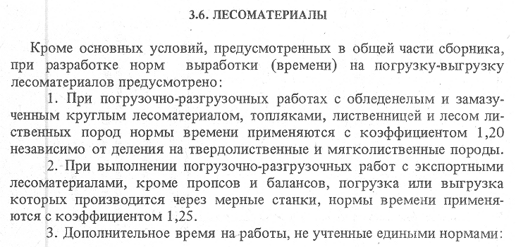
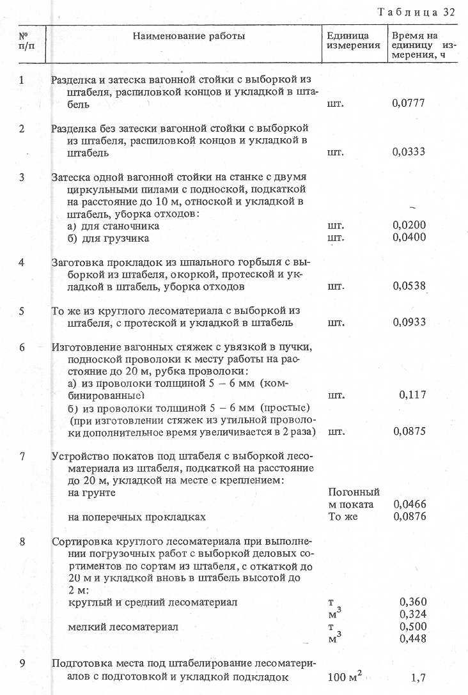

3.6.1. Погрузка с формированием пачки груза (подъема) при помощи крана
3.6.2. Погрузка лесоматериалов кранами с помощью гибких стропов
3.6.3. Погрузка лесоматериалов кранами с грейфером
3.6.4. Погрузка пакетированных лесоматериалов кранами
3.6.5. Погрузка хлыстов на специальные лесовозные платформы краном ЛТ-62 с помощью гибких стропов
3.6.6. Погрузка хлыстов на специальные лесовозные платформы краном ЛТ-62 с грейфером
3.6.7. Выгрузка с укладкой груза на складе
3.6.8. Выгрузка лесоматериалов с укладкой на складе и перемещением вручную на расстояние до 20 м